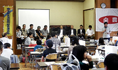
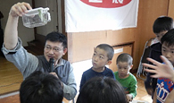
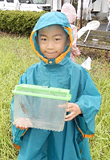
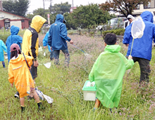
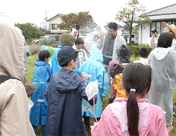

2018年度｢体験稲刈り＆田んぼの生きもの調査｣報告
埼玉県生活協同組合連合会
9月15日(土)、5回目を迎えたJA全農さいたまと埼玉県生活協同組合連合会共催、杉戸町とJA埼玉みずほ後援の｢体験稲刈り＆田んぼの生きもの調査｣は、杉戸町高野農村センター及び隣接の草地にて、生協組合員等22家族73人(大人31人・子ども42人)の参加で開催されました。
開会式

主催者を代表してJA全農さいたま水村副本部長、後援いただいた地元のJA埼玉みずほ宮城組合長からのあいさつ、来賓の紹介が行われました。あいにくの雨のため、残念ながら稲刈り体験は中止となり、事務局より本日のスケジュールと注意事項について案内がありました。生産者の野口さんより、普段あまり見ることのない俵や稲穂の紹介、お米作りのお話も伺いました。
田んぼの生きものについての説明

田んぼの生きもの調査の林講師より、実際に当日捕まえた虫を紹介いただき、田んぼやその周辺の生きものや自然環境、生態系などについてのお話をお聞きしました。途中、杉戸町の古谷町長とすぎぴょん（杉戸町マスコットキャラクター）も登場し、記念撮影する場面もありました。その後、お弁当や地域の杉戸町大島手作り味噌部会のみなさんが作ってくださった豚汁を食べながら、雨が小降りになるのを待ちました。
生きもの調査

昼食後、若干小降りになった雨の中、隣接する草地に出て、生きもの調査をおこないました。子どもたちは虫かごや網をもって草地で生きものを探し始めましたが、雨で動きが鈍いこともあり、普段捕まえることが困難なクルマバッタやトノサマバッタを素手で次々に捕まえることができました。ほかにも、ショウリョウバッタ、オンブバッタ、クルマバッタ、コバネイナゴ、エンマコオロギ、ウスイロササキリ、ツユムシなど、多種多様な生きものを目にして、あちこちで歓声が上がっていました。捕まえた虫を林講師に見てもらい、正式な名前を教えてもらいました。身近にこんなにたくさんの虫がいることを知り、最後は、バッタとばしをおこない、生態系保護のため、捕まえた生きものを草地に戻して、終了しました。
|  |  |